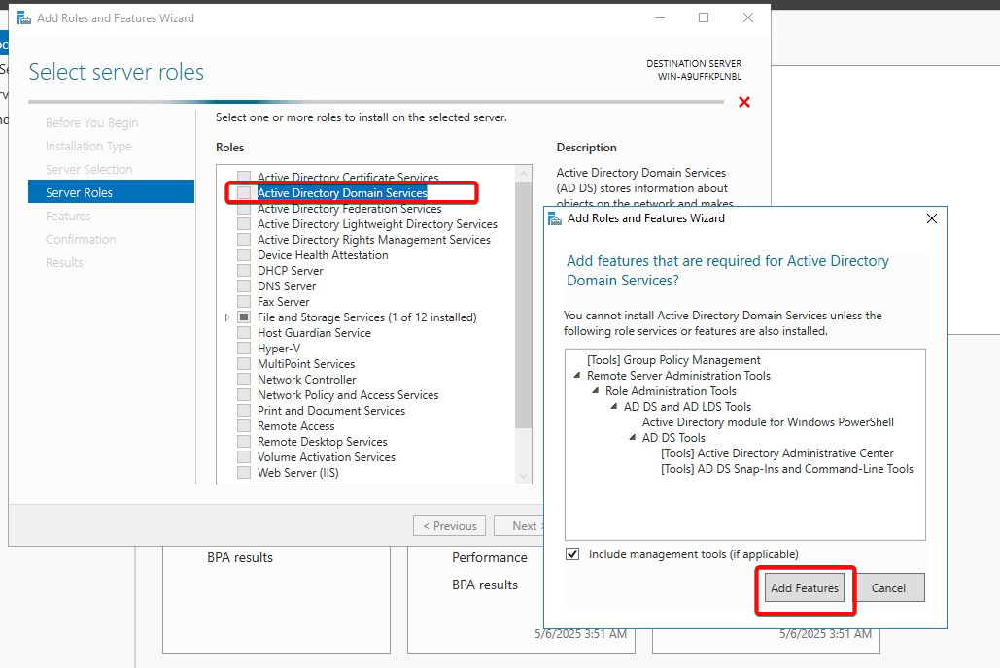
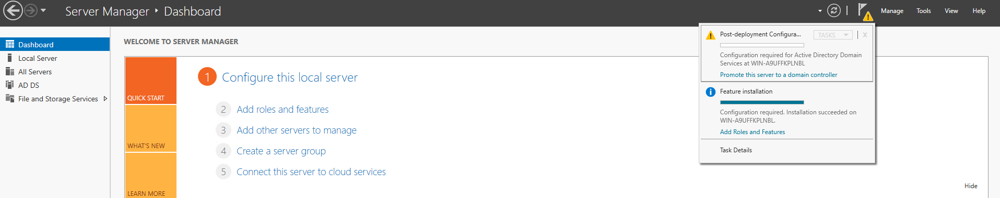
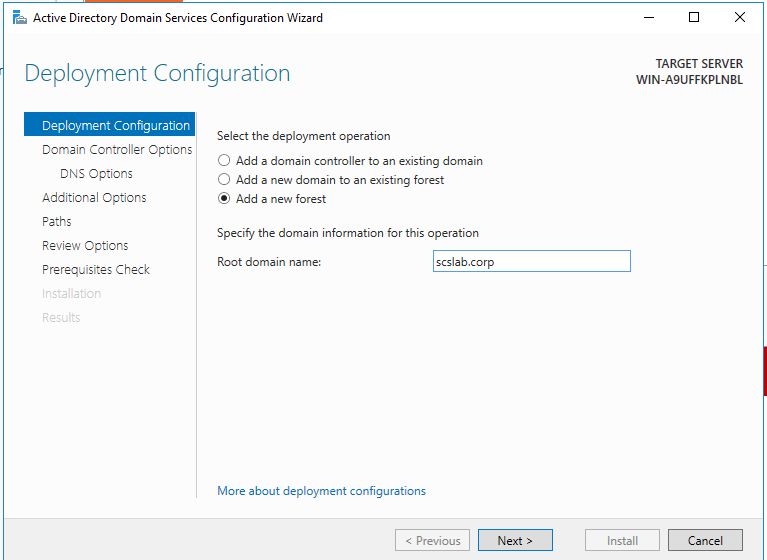
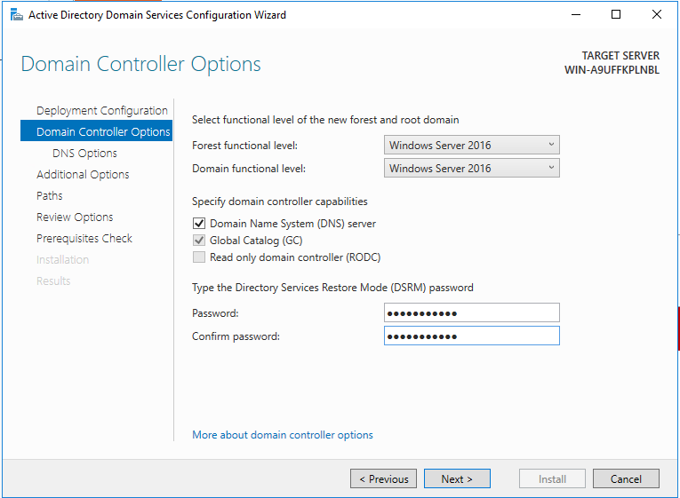
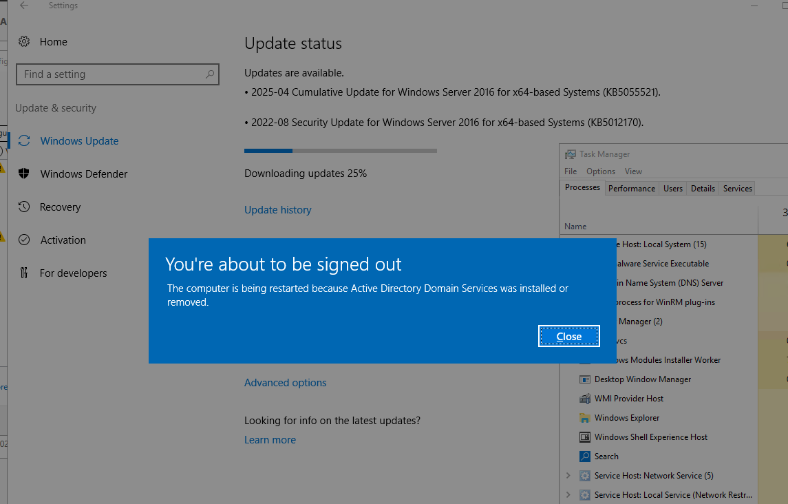
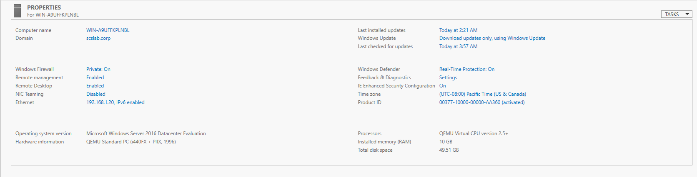

Active Directory Domain Services (AD DS) is a crucial feature for organizations that need centralized management of users, computers, and other network resources. Whether you’re setting up a new domain or promoting a server to be a Domain Controller (DC), this guide will walk you through the steps to install the AD DS role on Windows Server 2016.
Active Directory provides a central point of authentication and authorization for all network resources. By installing the AD DS role, you can:
Before installing AD DS, ensure the following:
In the Select server roles section, scroll down and select Active Directory Domain Services.
A prompt will appear asking to add additional features required for AD DS. Click Add Features.

Click Next and continue through the wizard until you reach the Confirm installation selections page.
Review your selections and click Install. The installation process will begin.
After the AD DS role has been installed, you need to promote the server to a Domain Controller (DC).
In Server Manager, a notification will appear saying "Promote this server to a domain controller". Click on the link to open the Active Directory Domain Services Configuration Wizard.

In the wizard, choose whether you want to add a new forest or join an existing domain.
Create a new forest: If this is your first Domain Controller, select Add a new forest and enter a Root domain name (e.g., scslab.corp, used throughout this series).

Click Next and proceed through the wizard. Configure the following settings:
Domain Controller Options: Set the Forest Functional Level and Domain Functional Level (usually leave at default settings unless specific needs require otherwise).
DNS Server: Select DNS server to install the DNS role (recommended).
Directory Services Restore Mode (DSRM) password: Enter and confirm a password for DSRM, which is needed for recovery purposes.

Click Next until you reach the Prerequisite Check page. The wizard will run a check to ensure your server meets the necessary requirements.
If there are no issues, click Install.

The server will begin promoting to a Domain Controller. This process may take a few minutes.
Once the process completes, the server will automatically reboot.
